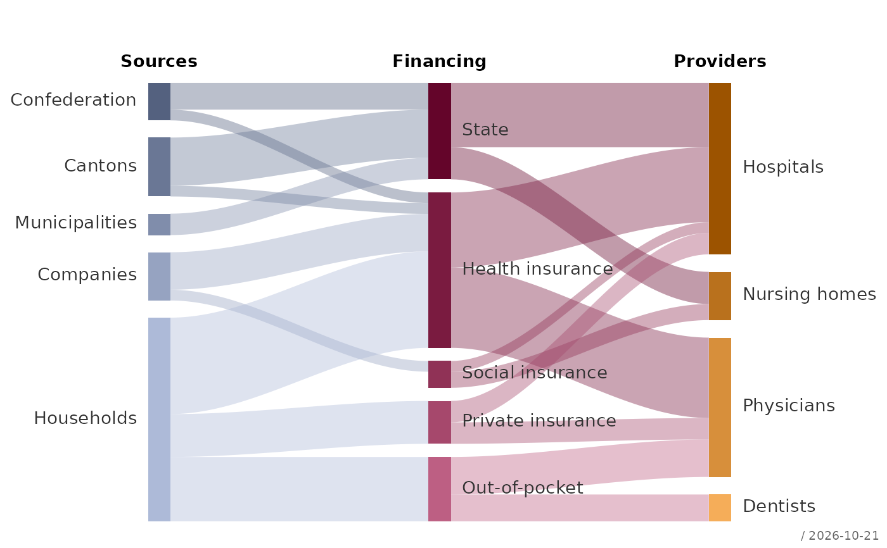
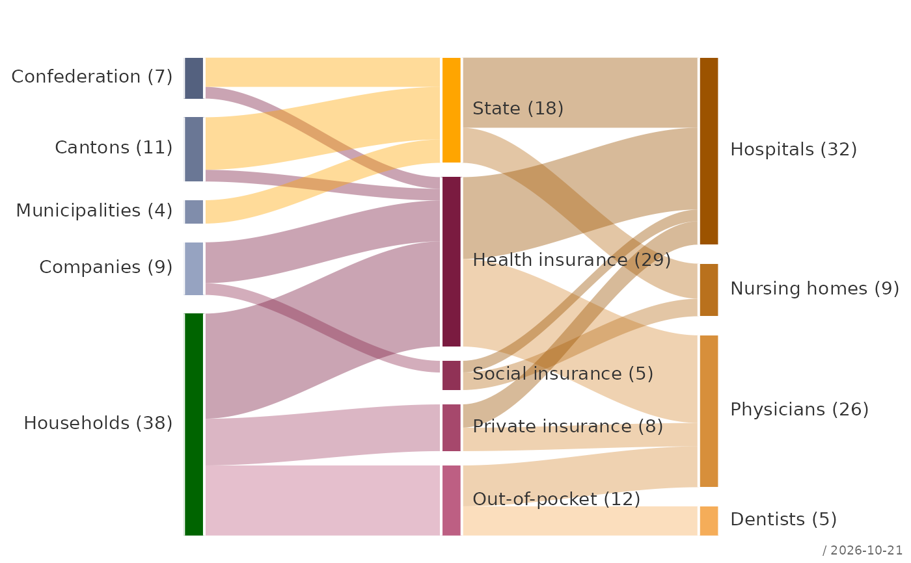
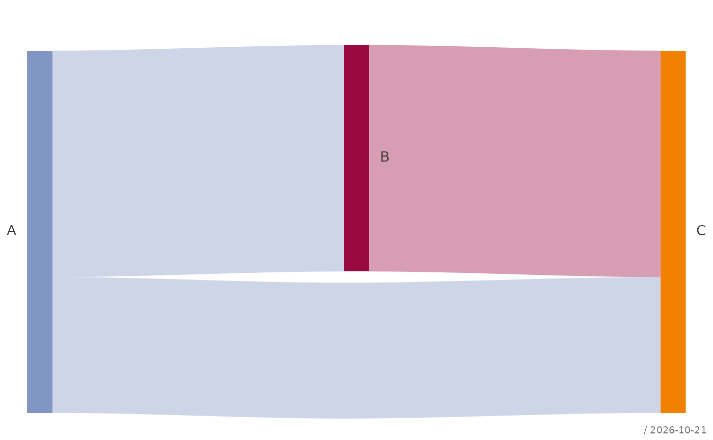
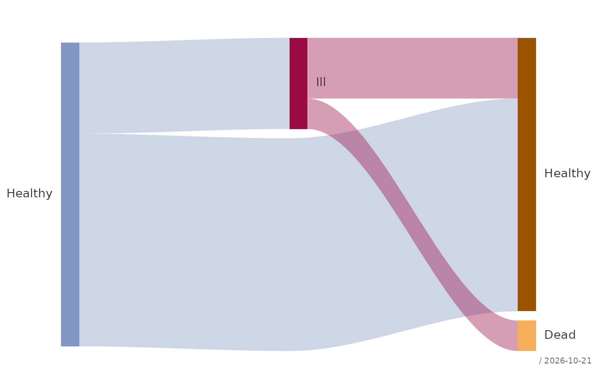

Draws a Sankey diagram: nodes arranged in stages (columns) and flows between them as ribbons whose width is proportional to their value, as used for money flows, patient pathways or energy balances. The input is a plain list of flows; stages, node order and colors are derived from it.
Usage
plotSankey(
x,
stages = NULL,
main = NULL,
order = NULL,
nodeWidth = 0.08,
gap = 0.03,
col = .useTheme,
border = NA,
flowCol = "source",
opacity = 0.4,
labels = TRUE,
values = FALSE,
stamp = .useTheme,
...
)Arguments
- x
a data frame with one row per flow and three columns: the origin node, the destination node and the value of the flow (finite, non-negative). The column names do not matter, only their order. A node may appear as destination in one stage and as origin in the next. Node names identify nodes globally: a state that recurs at different stages (e.g. "Healthy" before and after treatment) needs distinct names, which
labelscan then display alike.- stages
optional character vector of column headings, one per stage, e.g.
c("Sources", "Regimes", "Providers").- main
main title.
NULL(default) draws none, unless the theme setsautoTitle = TRUE(see theme); the title is then the name ofx."",NAorFALSEalways suppress it and compact the top margin; any other string is used as given.- order
optional character vector of node names giving their order from top to bottom within each stage. Nodes not listed follow in the order of their first appearance in
x, which is the default.- nodeWidth
width of the nodes as a fraction of the distance between two stages, between 0 and 1.
- gap
minimal vertical space between the nodes of a stage, as a fraction of the plot height (non-negative). It applies to the stage that needs the most room; the other stages spread their nodes over the same height, so all stages with more than one node are flush at the top and bottom. A stage with a single node is centred.
- col
node colors.
.useTheme(default) gives each stage a hue from the theme palette and its nodes shades of it. A named vector (c(Bund = "darkgreen", ...)) sets the colors of the named nodes, an unnamed one is recycled over all nodes in stage order.- border
color of a line along the left and right edge of the nodes, where the ribbons meet them, e.g.
"white"for a fine separation;NA(default) draws none. The line width followslwdin.... Top and bottom stay open, so the nodes keep exactly the height of their ribbons.- flowCol
color of the ribbons:
"source"(default) takes the color of the origin node,"target"that of the destination node; any other value is used as a color for all ribbons.- opacity
opacity of the ribbons, between 0 and 1.
- labels
controls the node labels.
TRUE(default) draws the node names, left of the first stage, right of all others.FALSE,NULLorNAsuppress them. A named character vector replaces the text of the named nodes, e.g.c(Healthy.1 = "Healthy", Healthy.2 = "Healthy"). A named list overrides arguments ofgraphics::text(), e.g.list(cex = 0.7, col = "grey30").- values
append the node value to the labels:
FALSE(default) orTRUE, which formats withfm(); a list of arguments forfm(), e.g.list(digits = 1, bigMark = "'"); or a function that turns the values into strings.- stamp
controls the corner stamp.
.useTheme(default) resolves togetTheme()$stamp.TRUE/FALSE/NULL, a string, or a named list forstamp().- ...
further graphical parameters passed to
par()via the internal framework.
Value
Invisibly, a list with the data frames nodes (name, stage,
inflow, outflow, value = the larger of both, color and the
coordinates of each node) and flows (the positive flows with their
vertical positions at both ends), e.g. for checking balances or
adding annotations.
Details
The stage of a node is the length of the longest directed path that leads to it from a node without incoming flows, so the stages follow from the flows alone. Flows that lead back to an earlier node (cycles) are not supported. Zero flows are dropped, and with them nodes that have no other flows.
A flow may skip stages. It is then led through an invisible pass-through node in each stage in between, placed below the real nodes, so that it does not run through a node it has nothing to do with.
The height of a node is the larger of its total inflow and total
outflow; unequal totals are allowed. Within a node, the ribbons are
stacked in the order of the nodes they lead to or come from, which
avoids crossings at the node itself. The order of the nodes within a
stage is not optimised; order sets it by hand.
The left and right margins are widened for the labels of the first
and last stage, unless mar in ... sets those sides.
See also
Other plot.special:
plotBinaryTree(),
plotCirc(),
plotLift(),
plotMiss(),
plotPolar(),
plotPropCI(),
plotTernary(),
plotTimeSeries(),
plotTreemap(),
plotWeb()
Examples
# Financing of the Swiss health care system (simplified, CHF bn):
# one row per flow - origin, destination, value
flows <- data.frame(
from = c("Confederation", "Confederation", "Cantons", "Cantons",
"Municipalities", "Companies", "Companies",
"Households", "Households", "Households",
"State", "State", "Health insurance", "Health insurance",
"Social insurance", "Social insurance",
"Private insurance", "Private insurance",
"Out-of-pocket", "Out-of-pocket"),
to = c("State", "Health insurance", "State", "Health insurance",
"State", "Health insurance", "Social insurance",
"Health insurance", "Private insurance", "Out-of-pocket",
"Hospitals", "Nursing homes", "Hospitals", "Physicians",
"Hospitals", "Nursing homes", "Hospitals", "Physicians",
"Physicians", "Dentists"),
value = c(5, 2, 9, 2, 4, 7, 2, 18, 8, 12,
12, 6, 14, 15, 2, 3, 4, 4, 7, 5)
)
plotSankey(flows, stages = c("Sources", "Financing", "Providers"))

# own colors for some nodes, ribbons colored by destination, values
plotSankey(flows, col = c(Households = "darkgreen", State = "orange"),
flowCol = "target", values = TRUE, border = "white", lwd = 2)

# a flow that skips a stage is led around the nodes in between
plotSankey(data.frame(from = c("A", "B", "A"), to = c("B", "C", "C"),
value = c(5, 5, 3)))

# the same state at two stages: distinct names, same label
path <- data.frame(from = c("Healthy.1", "Healthy.1", "Ill", "Ill"),
to = c("Healthy.2", "Ill", "Healthy.2", "Dead"),
value = c(70, 30, 20, 10))
plotSankey(path, labels = c(Healthy.1 = "Healthy", Healthy.2 = "Healthy"))
